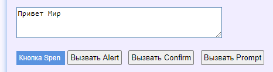

Диалоговые окна alert, prompt и confirm
В браузере отключена поддержка диалоговых окон alert, prompt и confirm.
Таким образом чтобы код выполнялся игнорируя вызовы этих диалоговых окон.
Как это работает? Возьмём для примера тестовую страницу https://somovstudio.github.io/test2.html
Нажмем на кнопку "Вызвать Alert"

откроется диалоговое окно

нажав на ОК мы увидим в поле сообщение "Привет Мир"
То есть сообщение "Привет Мир" отобразится в поле только после нажатия на OK в диалоговом окне Alert.
Если нажать на кнопку "Вызвать Confirm" будет задан вопрос и выведен ответ в поле после нажатия на "ОК" (или "Отмена")

Если нажать на кнопку "Вызвать Confirm" будет задан вопрос и выведен ответ в поле после ввода числа и нажатия на "ОК"

Теперь давайте сделаем тоже самое руками автотеста
|
Файл: ExampleTest5.cs |
|
using System; using System.Collections.Generic; using System.ComponentModel; using System.Windows.Forms; using System.Threading; using System.Threading.Tasks; using System.IO; using System.Data; using System.Drawing; using System.Linq; using System.Text; using System.Text.RegularExpressions; using System.Net; using System.Net.Http; using System.Net.Http.Headers; using System.Reflection; using Newtonsoft.Json; using HatFramework; namespace Hat { public class ExampleTest5 { Tester tester; public async void Main(Form browserWindow) { tester = new Tester(browserWindow); await setUp(); await test(); await tearDown(); } public async Task setUp() { await tester.BrowserFullScreenAsync(); } public async Task test() { await tester.TestBeginAsync(); await tester.GoToUrlAsync("https://somovstudio.github.io/test2.html", 5); await tester.WaitAsync(2); await tester.ClickElementByIdAsync("btnAlert"); await tester.WaitAsync(2); await tester.ClickElementByIdAsync("btnConfirm"); await tester.WaitAsync(2); await tester.ClickElementByIdAsync("btnPrompt"); await tester.TestEndAsync(); } public async Task tearDown() { // await tester.BrowserCloseAsync(); } } } |
Запустив автотест мы увидим что диалоговые окна не открываются, а данные меняются в поле.
Сначала будет загружена страница в своем состоянии по умолчанию

Затем автотест нажмет кнопку "Вызвать Alert", при этом диалоговое окно не откроется, а в поле сразу появится сообщение "Привет Мир"

Затем автотест нажмет кнопку "Вызвать Confirm", при этом диалоговое окно не откроется, а в поле сразу появится сообщение "Нет (спасибо за ответ)"

Затем автотест нажмет кнопку "Вызвать Prompt", при этом диалоговое окно не откроется, а в поле сразу появится сообщение "Сейчас null год"
Как вы можете видеть, браузер проигнорировал диалоговые окна и вывел значения по умолчанию.
Таким образом диалоговые окна не мешают выполнению автотестов.
Created with the Personal Edition of HelpNDoc: Easily create EPub books